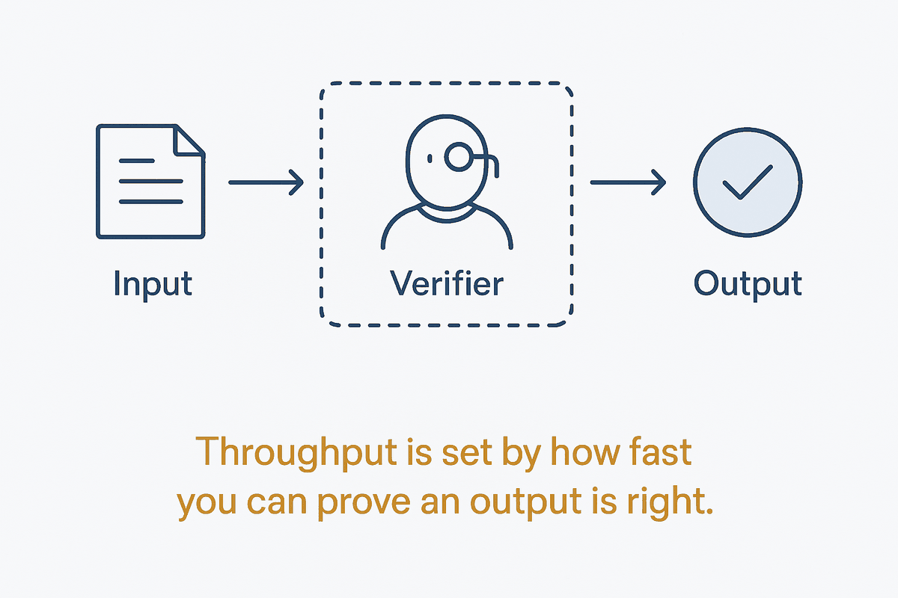

Agents don't fail at generating, they fail at checking. Throughput is set by how fast you can prove an output is right — not by how fast you can produce one.

Every agent loop has the same shape: decide, act, observe, verify. Attention goes almost entirely to the first two — better models, better tools, better prompts — while the constraint sits in the fourth. Generation is cheap and getting cheaper. Establishing that a given output is actually correct is neither, and it is the step that decides whether the loop can be trusted to run without you watching it.
This inverts the usual optimisation instinct. Making the generator twice as fast doubles the rate at which unverified work arrives; if verification is manual, you have doubled your own workload, not the system's output. The only changes that raise real throughput are the ones that make checking cheaper: rules with a pass/fail answer, schemas a validator can enforce, tests that run without a human, a golden dataset that says whether this release got worse. Where a check can be automated, the loop can be left alone. Where it cannot, a person is inside the loop whether or not the architecture admits it.
The failure mode this prevents has a name worth remembering: activity is not progress. A loop that runs, burns tokens, produces output and reports success has demonstrated that it ran — nothing more. Without an independent verifier, "it completed" and "it worked" are the same signal, which means you have no signal. This is the same discipline that makes a status code useless as a statement about the world: the process finishing tells you about the process, not about reality.
So the design question for any agentic system is not "how good is the model?" but "what evidence proves this step advanced the goal, and can that evidence be produced without me?" Answer it and the loop scales. Leave it unanswered and every improvement upstream just increases the volume of work arriving at a bottleneck you never widened.